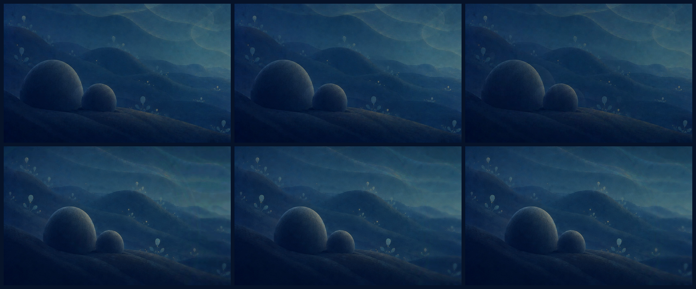
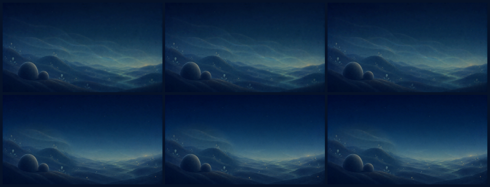
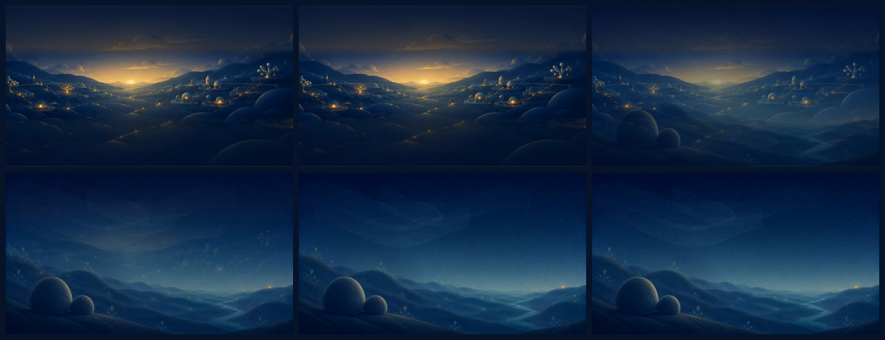
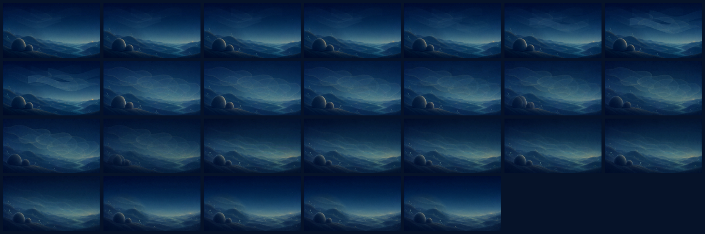
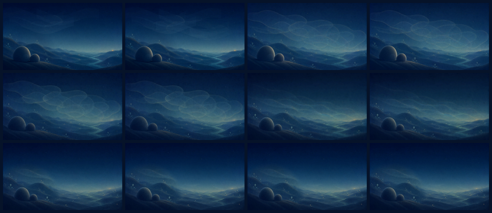

WORKING TEST · NON-CANONICAL · STAGE 3
Scene 2｜増える情報、深まる問い
13.000秒のMotion Blocking。まず音なしで、5 Beatの意味だけを確認してください。
Beat Keyframes
Focused Review



Sequence Evidence


Compass Review Points
- A3で「世界が存在しているが見えにくい」と読めるか。
- A4で親子が新しく現れず、そこにいた存在として認識されるか。
- A5で世界全体の可読性と余白が戻るか。
- 右遠景の暖色光が答え・ゴールに見えないか。
- Scene 1→2が同じ世界の内部へ進む呼吸としてつながるか。